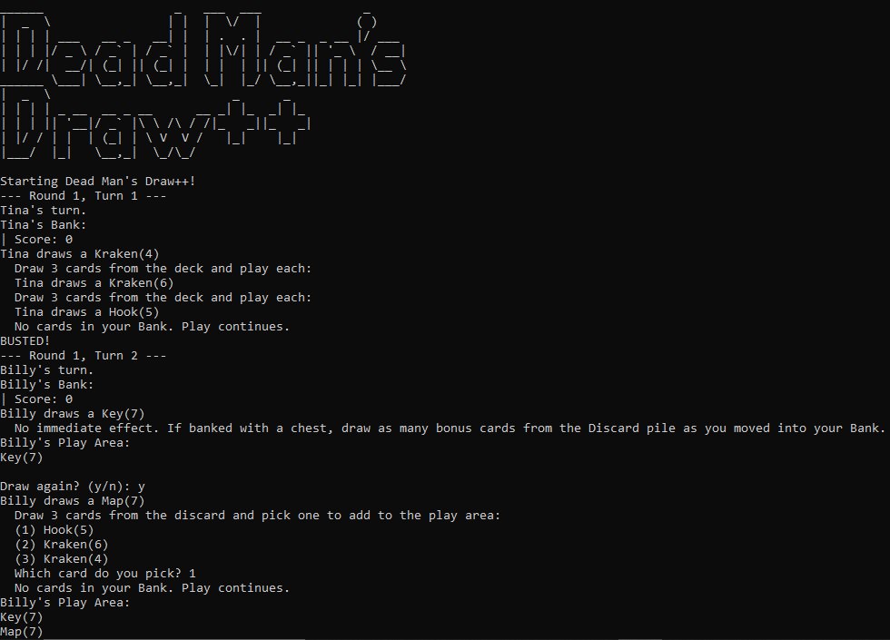

A C++ terminal-based system that records and monitors patient vitals like temperature, heart rate, and blood pressure. It provides automated health alert levels (Green, Yellow, Red) and sends simulated notifications to GPs or hospitals for critical conditions.
C++, OOP, CLI
A C++ terminal-based game inspired by Dead Man’s Draw++, where players take turns drawing cards and executing strategic actions like Kraken, Map, Cannon, and more. Features dynamic card interactions, scoring, and bust logic.
C++, OOP, Game Logic

A Python implementation of the classic logic puzzle where players must guess a hidden pattern based on five dice rolls. The game gives subtle hints and tracks performance, challenging players to discover the logic behind the scoring system.
Python, CLI, Random, Modular Design
A Python terminal-based word guessing game inspired by Wordle. Users get 6 attempts to guess a 5-letter word. Feedback is provided for correct, incorrect, and misplaced letters.
Python, CLI, File I/O
A fantasy-themed Python simulator that allows an alchemist to mix potions using herbs and catalysts. It includes ingredient refinement, potion boosting effects, and unit testing.
Python, OOP, Unit Testing
A Python terminal-based utility that allows users to convert numbers between decimal and binary formats. It also includes a binary counting feature for educational use.
Python, CLI
An interactive Streamlit web app that lets users track live and historical prices of popular cryptocurrencies like Bitcoin, Ethereum, and Litecoin. Users can choose from multiple currencies (USD, AUD, EUR, INR) and visualize prices for the past 1 to 60 days. Built with real-time data from the CoinGecko API and customizable UI. Click the project name to view the source code on GitHub.
Python, Streamlit, API, Data Visualization
A Java-based terminal game that simulates managing a virtual farm. Players can perform actions like planting, harvesting, feeding animals, and tracking progress over days. Designed with object-oriented principles, this turn-based game challenges players to maintain their farm's efficiency and make strategic decisions. Click the project name to view the source code on GitHub.
Java, OOP, CLI

A web-based timer designed to keep meetings on track. It provides a clean UI to set the meeting duration, start/pause/reset the timer, and alert users when time is up. Ideal for group presentations, agile stand-ups, or productivity sprints. Click on the project name to view the live webpage.
HTML, CSS, JavaScript